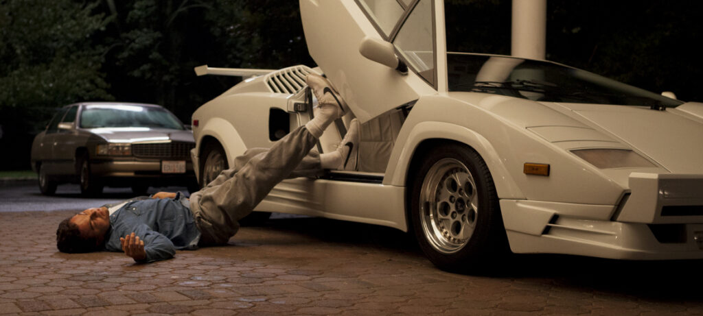

Why I Love The Wolf of Wall Street
Year: 2013 | Rating: R
Director: Martin Scorsese
Stars: Leonardo DiCaprio, Jonah Hill
The Wolf of Wall Street is a wild movie about greed and ambition. Leonardo DiCaprio’s portrayal of Jordan Belfort is both captivating and chaotic, taking viewers on a rollercoaster of a life lived on the edge. It’s a film about pushing the limits of what’s possible but also serves as a cautionary tale about the dangers of unchecked greed.
Key Themes
- Greed and Excess: The film showcases the unrestrained greed of Wall Street, with Belfort’s rise symbolizing how far people are willing to go for money and power.
- Morality vs. Success: Throughout the movie, Jordan Belfort constantly chooses success and wealth over morality, leading to his inevitable downfall.
- The Cost of Excess: The film explores how living a life of excess can have disastrous consequences on personal relationships, mental health, and one's future.
Memorable Scenes
One of the most unforgettable scenes is where Jordan Belfort, high on Quaaludes, attempts to drive his car home. The scene is both chaotic and funny, showcasing DiCaprio’s incredible acting range.
Why This Movie Resonates With Me
The Wolf of Wall Street resonates with me because it portrays the allure and the dangers of excessive ambition. It’s a movie that reflects on the lengths people will go for wealth, and it serves as a reminder of the moral and personal costs that can come with an unchecked desire for success.